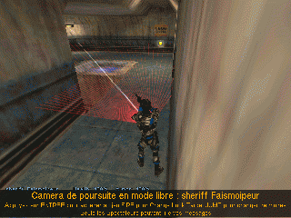

Cliquez sur le lien ci-dessous pour télécharger la dernière version installable des Rational Autonomous Cybernetic Commandos: les 6 DLLs, les scripts d'installation, les fichiers de configuration, ces pages HTML et le code source.
VERSION ACTUELLE: 20020509
Les numéros de version sont les dates de compilation sous la forme AAAA:MM:JJ
IMPORTANT
Le projet RACC est toujours en état de développement. Il ne s'agit PAS d'une version finalisée. Ceci signifie que de nombreuses fonctionnalités restent encore à implémenter et que vous ne devez pas vous attendre à quelque chose de parfait (oui, ça a l'air évident comme ça, mais au vu de certains e-mails que je reçois parfois je me demande !). Notamment les fonctionnalités suivantes ne sont pas encore correctement implémentées :
- Apprentissage
- Mémoire
- Emotions
- Sens de l'orientation
- Sens du devoir
- Formation innée d'escadre
CE QUI SIGNIFIE que le fait que vous ne les perceviez pas N'EST PAS UN BUG. Si vous ne voyez pas les bots ramener les otages dans Counter-Strike, c'est normal. Si vous ne voyez pas les bots capturer le drapeau dans Team Fortress Classic, c'est normal. Laissez-moi le temps de les programmer, ou faites-le vous même. Le code source est disponible.
D'autre part, je souhaite que vous ayez bien conscience que ces bots ne supportent pas la comparaison avec les autres bots waypointés. Ayez bien conscience qu'il s'agit d'une navigation totalement différente qui tente d'utiliser des techniques humaines.
Les bots échantillonnent leur champ de vision en temps réel

CE QUI SIGNIFIE que leur navigation est moins performante que celle des POD-Bots avec lesquels tout le monde semble vouloir les comparer. Si vous ne voyez pas les bots escalader les toits dans Counter-Strike, c'est normal. Si vous ne voyez pas les bots passer par certains endroits difficiles, c'est normal. La puissance actuelle des ordinateurs ne permet tout simplement pas à leur intelligence artificielle, copiée sur le modèle humain, d'être aussi performante que celle des bots waypointés qui, eux, n'ont pas besoin d'yeux pour suivre un itinéraire.
Vous êtes avertis.
Version réduite sans les échantillons vocaux ni les modèles de joueurs additionnels : cliquez ici
Echantillons vocaux : cliquez ici
Modèles de joueurs additionnels : cliquez ici
N'hésitez pas à m'envoyer tout commentaire, patch ou rapport de bug. Une telle aide serait grandement appréciée. Chaque idée soumise, suggestion ou patch pour le code source sera audité et, s'il s'avère adéquat et pertinent, inclus dans la prochaine version.
Benelli XM1014